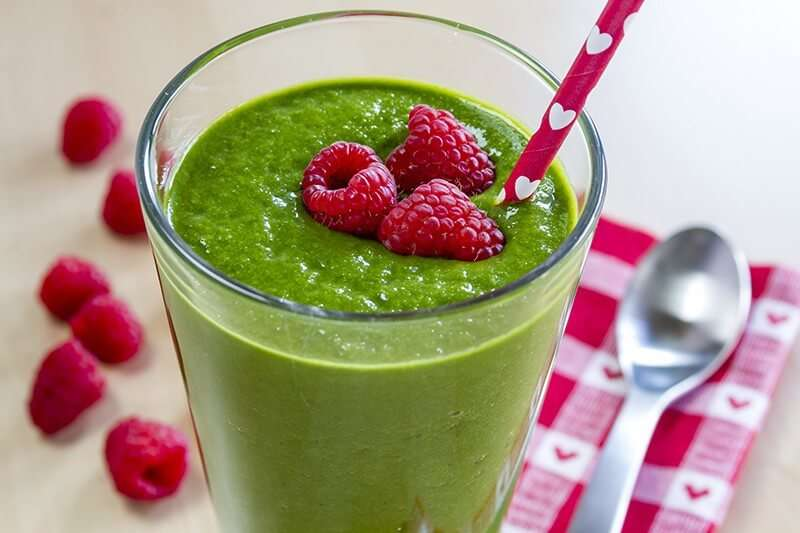

Receta Nro 5 :
Batido de frutas y verduras con proteina vegetal
Ingredientes:
1 platano maduro
1 punado de espinacas frescas
½ taza de arandanos (pueden ser congelados)
1 cucharada de semillas de chia o linaza
1 taza de leche vegetal (almendra, coco, avena)
1 scoop de proteina vegetal en polvo (opcional)
Instrucciones:
Coloca todos los ingredientes en una licuadora.
Licua a alta velocidad hasta obtener una mezcla suave y homogenea.
Si prefieres un batido mas espeso, anade menos leche. Para un batido mas liquido, anade mas.
